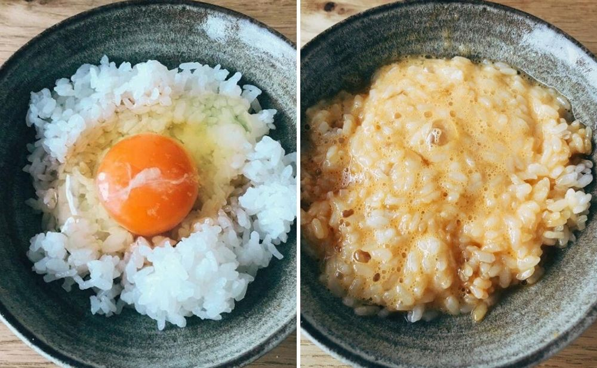

Tamago Kake Gohan, also known as “Eggs on Rice”, is exactly what its name suggests. You only need to know how to steam a bowl of rice and crack a raw egg without leaving eggshells behind.
Ingredients: